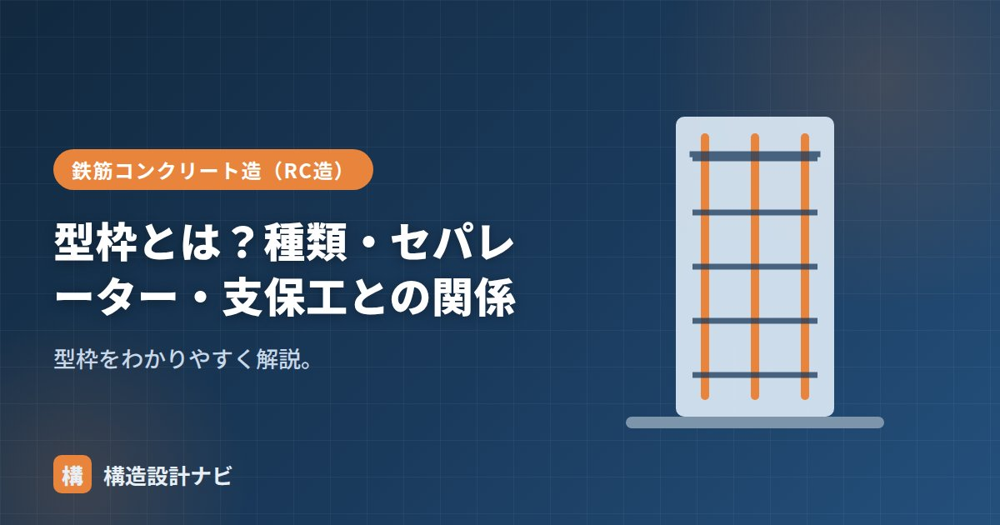

型枠とは？種類・セパレーター・支保工との関係

型枠（かたわく）とは、固まる前の流動的なコンクリートを所定の形に保持する仮設の枠です。木製・鋼製のパネルを組み合わせて壁・柱・梁・スラブの形をつくり、コンクリートが必要な強度に達したら取り外します。建物そのものを支える構造体ではありませんが、コンクリートの側圧や施工時の荷重を確実に支えなければならず、躯体工事の品質・工程・安全を左右する重要な仮設工事です。
- 型枠はせき板と支保工・締付け金物などから構成される仮設の枠。
- 木製・鋼製・システム型枠・捨て型枠など種類があり、現場条件で使い分ける。
- コンクリートの側圧に耐える設計が必要。セパレーターで間隔を保ち、支保工で支える。
型枠の構成
型枠は、コンクリートに接するせき板と、それを支える支保工・締付け金物などからなります。せき板だけでは打込み時の圧力に耐えられないため、桟木で補強し、外側から締付け金物で固定するという、複数の部材が一体となった仮設構造として成り立っています。
側圧に耐える設計
打ち込まれた直後の生コンクリートは液体に近い状態で、型枠の壁面には側圧という水平方向の圧力がかかります。側圧は打込み速度・気温・コンクリートの単位容積質量などによって変化し、打込み速度が速いほど、また気温が低いほど大きくなる傾向があります。型枠・支保工は、この側圧に耐えられるだけの強度・剛性を確保して計画する必要があり、不足すると型枠が変形・破損して爆発事故（型枠の破裂）につながる危険があります。
種類
| 種類 | 内容 |
|---|---|
| 木製型枠 | 合板せき板＋桟木。最も一般的 |
| 鋼製型枠（メタルフォーム） | 転用回数が多い |
| システム型枠 | 大型パネルで効率化 |
| 捨て型枠 | 取り外さず残す型枠 |
木製型枠は加工の自由度が高く複雑な形状にも対応しやすい一方、転用回数（繰り返し使える回数）は数回程度と少なめです。鋼製型枠やシステム型枠は初期コストが高いものの、転用回数が多く大規模工事で経済的になります。現場の規模・形状の複雑さ・工期に応じて、これらを組み合わせて使うのが一般的です。
Q1. 型枠工事はどんな職種が担当しますか？
型枠大工と呼ばれる専門の職人が、図面をもとにせき板・桟木を加工・組立てします。鉄筋工事・コンクリート工事と並ぶ躯体工事の中心的な工種の一つです。
セパレーター
セパレーターは、向かい合うせき板の間隔（壁厚・かぶり）を一定に保つ金物です。せき板の外側でフォームタイ（締付け金物）で固定し、コンクリート圧で型枠が広がるのを防ぎます。Pコンを使って表面の処理をします。壁のように両側にせき板を立てる部位では、このセパレーターの間隔・強度が側圧に耐えられるかどうかの重要なチェックポイントになります。
支保工との関係
支保工は、スラブや梁の型枠を下から支える仮設です（支柱・大引・根太）。コンクリートが自立できる強度になるまで荷重を支え、所定の存置期間を経て取り外します。支保工は自重・打込み時の作業荷重に加え、コンクリート自体の重量も支えるため、支柱の間隔・許容荷重を事前に計画しておくことが欠かせません。存置期間や取り外しの具体的な判定基準は「型枠の取り外し」で詳しく解説しています。
背の高い壁や打込み速度が速くなりそうな部位では、標準の型枠図をそのまま流用せず側圧計算をやり直すよう指示しています。想定より速いポンプ圧送で型枠が孕んだ現場を見てから、特に慎重になりました。
型枠の構成（図解）
主要部品の役割
| 部品 | 役割 | 備考 |
|---|---|---|
| せき板 | コンクリートに接し、形状と表面を決める | 合板・鋼製・樹脂製など |
| 桟木（端太材） | せき板を補強し、変形を防ぐ | 縦端太・横端太を組み合わせる |
| セパレーター | 壁・柱の厚さを保持する。両側のせき板をつなぐ | コンクリート内に残る。端部は錆対策が必要 |
| フォームタイ（締付け金物） | 外側から締め付け、側圧に抵抗する | 脱型後に撤去 |
| コーン | セパレーター端部に取り付け、かぶりを確保 | 脱型後、穴をモルタルで埋める |
| 支保工（サポート） | スラブ・梁の型枠を下から支える | 鉛直荷重を支える。存置期間の規定が厳しい |
脱型後の壁面には、セパレーターのコーンを外した穴（Pコン穴）が規則的に残ります。この穴を放置すると、そこから水が浸入して内部のセパレーターが錆び、膨張してコンクリートを押し割ります。そのため、モルタルなどで確実に埋める必要があります。打ち放し仕上げでは、この穴の配置そのものが意匠になるため、割付けを設計段階で検討します。
よくある質問
Q1. 型枠の精度はどのくらい必要ですか？
部位により異なりますが、一般に位置は±10mm程度、断面寸法は0〜+10mm程度の精度が求められます（JASS5等による）。型枠の精度がそのまま躯体の精度になり、仕上げ工事の納まりにも影響します。特に打ち放し仕上げでは、より高い精度と表面性状が要求されます。組立後、コンクリート打込み前に位置・垂直・寸法を検査します。
Q2. 型枠は何回くらい転用できますか？
合板せき板で5〜10回程度、鋼製型枠では数十回以上が目安です。転用回数が増えると表面が傷み、コンクリートの仕上がりに影響します。打ち放し仕上げでは新品または転用回数の少ないものを使用します。転用によるコスト削減と仕上がり品質のバランスを、部位ごとに判断します。
Q3. 型枠工事はなぜ工期に影響するのですか？
型枠の組立・解体が、RC造の躯体工事のサイクルを左右するためです。1フロアの工程は「配筋→型枠→打込み→養生→脱型」の繰り返しで、型枠の組立と解体だけで相当な日数を要します。そのため、システム型枠や大型パネル、デッキプレート（捨て型枠）の採用など、型枠工事の効率化が工期短縮の重要なテーマになっています。
まとめ
- 型枠は固まる前のコンクリートを形に保持する仮設。せき板＋支保工等からなる。
- コンクリートの側圧に耐えられる強度・剛性で計画する必要がある。
- 木製・鋼製・システム・捨て型枠などの種類がある。
- セパレーターで間隔を保ち、支保工で支える。所定期間後に外す。